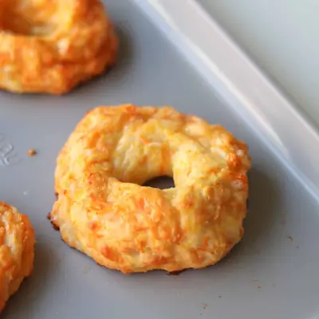

Cheese Bagels

Ingredients
- 1 cup (120g) self rising flour
- 1 cup (240g) plain Greek yogurt (full fat preferred)
- 1 teaspoon garlic powder
- 3/4 cup shredded cheddar cheese
- 1/2 cup shredded carrots (optional, but adds a great veggie boost)
- 1 egg (for egg wash)
Steps
- Preheat your oven to 375°F. Line a baking sheet with parchment paper or use a nonstick baking sheet like mine (linked above).
- In a bowl, combine the self-rising flour, Greek yogurt, and garlic powder. Mix until it comes together into a shaggy dough.
- Add in the shredded cheese and carrots, then gently knead everything together on a lightly floured surface until you have a soft dough. Try not to overwork it. Just enough to bring it together.
- Divide the dough into 4 equal pieces. You can shape them two ways: Rope method: Roll each piece into a rope (about 6–8 inches long), then bring the ends together to form a circle and pinch to seal.Hole method (easier!): Roll into a ball, then use your finger to poke a hole through the center and gently stretch it out.
- Place the bagels on your prepared baking sheet. Brush the tops with beaten egg for that golden finish.
- Bake for 20–25 minutes, until puffed and golden brown. Let them cool for about 10 minutes before slicing (if you can wait that long!).
Recipe by Min Kwon · Kidfriendly Meals, from MJ and Hungryman. Saved here for personal use; the original has the full notes, tips and photos. Open original